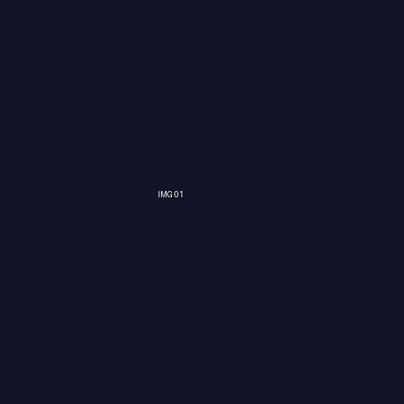
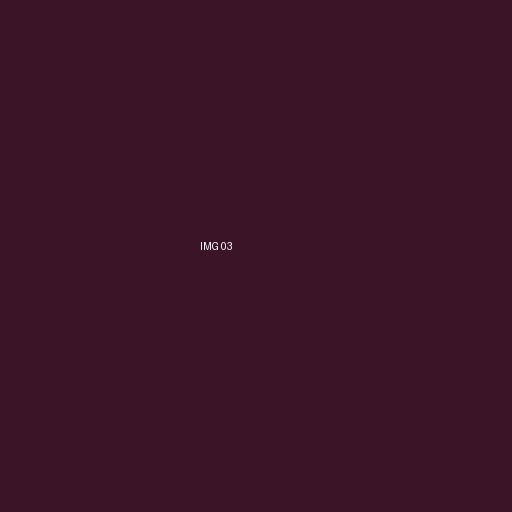
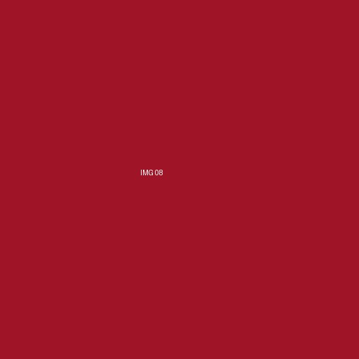
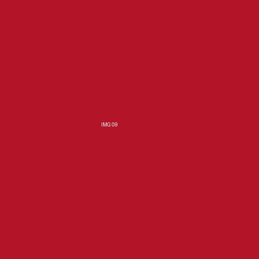

Fix program
14:00–16:00
Evés / pihenés / feltöltés
17:30–
Házibuli / extra körök
Étel
Csevapivo | Kafana Balkan Grill & Beer
Firkász Restaurant
Sir Lancelot Medieval Restaurant
Ital
Szórakozás
Atlantis Bisztró & Biliárd
Game Up!
Flippermúzeum
GAME OVER Escape Rooms Budapest
Metagame Klub
MystIQueRoom
Résztvevők

A Művész
Mindig elmagyaráz valamit, amit senki nem kérdezett.
A Túratérkép
Mindig tud egy jobb útvonalat – még akkor is, ha már ott vagytok.

A Panoráma
Fotó + póz, mintha prospektus lenne. Egy katt – és kész a borítókép.
A Gondolkodó
3 sör után életvezetési tanácsok. Meglepően pontos.
A CEO
Ő intézné… de végül valahogy mégsem ő intézi.

A Corporate Ninja
Pontosan tudja, mikor kell eltűnni. És mikor kell visszajönni.
A LinkedIn Legend
„Régen minden jobb volt” – majd 2 perccel később: „Na jó, ez most elég jó.”

A Nagy Testvér
Hangosabb, határozottabb, szervezőnek hiszi magát.

A Kis Testvér
Ritkán szól, de amikor igen, akkor ül a poén.